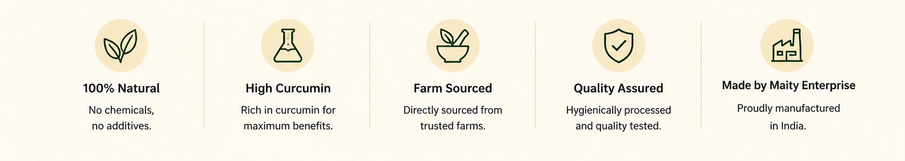

Organic. Direct. Export. Joint. Agriculture
Odeja turmeric by Maity Enterprise — delivering natural strength and rich flavor.
Odeja Pure Turmeric is made from finest quality turmeric roots, carefully selected, cleaned and ground to perfection. Rich in curcumin and antioxidants, it adds vibrant color, aroma and natural goodness to your everyday life.
High-quality turmeric with rich color, strong aroma and natural processing.

Orders and Supply Available